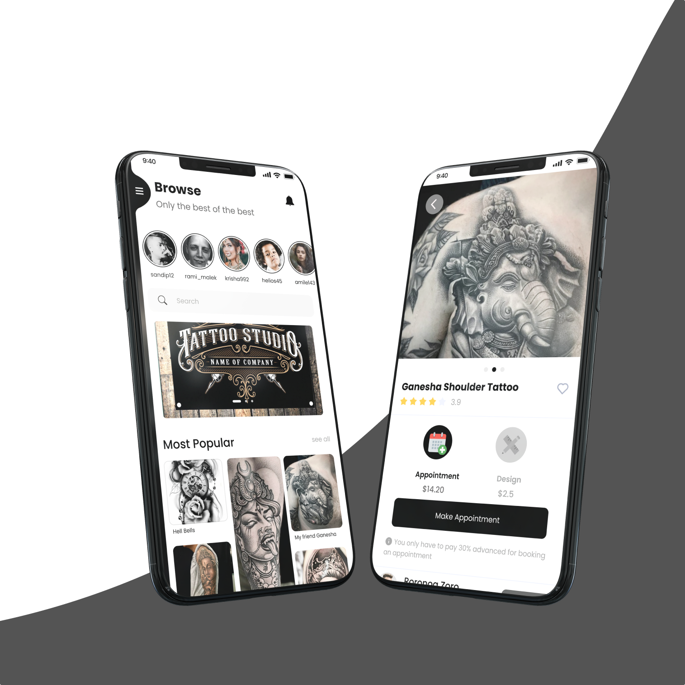
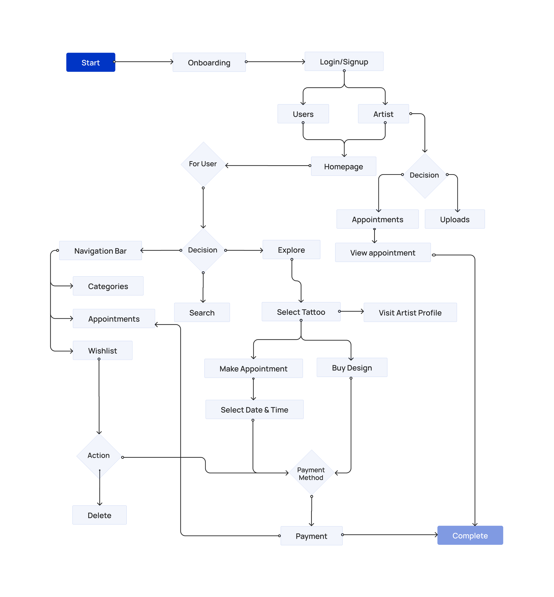

Inksvilla
Unified marketplace for tattoo discovery & artist connection
At Bigfoot Infotech, I led Inksvilla end-to-end as the sole designer and acting product manager — working with a 4-person team (1 designer, 3 developers) to take the product from discovery research through definition, high-fidelity design, and user testing.

At a Glance
The Problem
Getting a tattoo meant navigating scattered Instagram profiles, word-of-mouth referrals, and no reliable way to evaluate an artist's portfolio, pricing, or availability — before ever making contact.
The Users
Two distinct groups with opposing needs: tattoo enthusiasts trying to find and trust the right artist, and professional tattoo artists trying to grow a legitimate client base beyond social media.
The Solution
A unified mobile marketplace with a single entry point for both user types — giving enthusiasts a curated discovery feed and artists a professional storefront, booking system, and client management layer.
Designer & PM
My role
Startup World Cup
Recognition
Discovery → Launch
Outcome
The Trust Gap in Ink
Getting a permanent tattoo is one of the most personal purchases you can make. But the journey to finding the right artist was fragmented and unreliable — people scrolled Instagram for hours, relied on referrals, and still had no way to verify an artist's real reputation before committing.
The problem was equal on both sides. Enthusiasts couldn't discover qualified artists with confidence — and artists had no professional platform to showcase their work, set expectations, or manage clients without piecing together social media and direct messages.
Beyond the local problem, there was a larger opportunity we kept coming back to: Nepal has a rich tradition of tattoo artistry — deeply rooted in cultural symbolism and craft — but almost none of that talent had any digital presence or global reach. Inksvilla was also conceived as a platform to change that. A place where talented Nepali artists could be discovered not just locally, but by international clients and tattoo tourists actively looking for culturally distinctive work.
Neither side had what they needed. The gap wasn't just in access — it was in trust.
Designing for Two Worlds
Balancing enthusiast exploration with professional-grade artist tools.
Tattoo Enthusiast
Someone exploring tattoo styles and searching for an artist they can trust.
Tattoo Artist
A working professional who needs a platform to legitimise their business and manage clients.
The Marketplace Engine
A systematic flow designed to guide both user types from discovery to committed appointment.
Discover
Users explore artists based on style, proximity, and portfolio quality. The feed is visual-first.
Qualify
Artist profiles give users enough context — verified work, ratings, pricing — to make a confident choice.
Transact
Booking and payment happen within the app. No DMs, no separate forms, no ambiguity about cost.
How the Marketplace Works
A structured flow connecting discovery, trust, booking, purchase, and management for both users and artists.

Entry
Quick onboarding and role-based entry into the marketplace.
Discovery
Browsing, filtering, and artist evaluation.
Decision
Booking or purchasing through a clearer path.
Management
Handling appointments, uploads, payments, and saved items.
Usability Testing
Tasks Tested
We evaluated the core flows with 15 users, asking them to find an artist via style filters and complete a booking inquiry with reference images attached.
What Worked
The visual-first discovery feed resonated highly. Users naturally clicked into intricate tattoo designs to seamlessly reach detailed artist profiles.
What Needed Improvement
Users hesitated at the deposit stage. We resolved this by adding clear microcopy explaining the escrow system and refund policies prior to the payment gateway.
Key Design Decisions
Unified entry, portfolio-first trust, structured requests, and navigation keyed to real user behaviors.
Unified Entry System
I proposed a single landing page that detected user intent — enthusiast or artist — and branched from there. This reduced onboarding drop-off and removed the need for two separate apps.
Portfolio-First Hierarchy
Rather than leading with pricing or bios, artist profiles opened on the portfolio. Research confirmed visual credibility was the first thing users evaluated before reading anything else.
The Request Funnel
We replaced open-ended inquiry with a structured booking request — style, size, placement, reference images. This set clear expectations on both sides before any appointment was confirmed.
Intent-Driven Architecture
Structured navigation around behaviors: 'Explore' for casual browsing, 'Search' for specific styles/locations, and 'Appointments' for active engagement.
The Product Ecosystem
Five interconnected surfaces — each one designed for a specific moment in the tattoo journey, for both sides of the marketplace.
Onboarding
Three screens that set the product's promise before asking for a single detail. The sequence moved from discovery to proximity to action — building the full value proposition in the time it takes to tap Next three times.
- bolt Value-first onboarding: show the product before asking for a login
- bolt Three-step framing: browse → discover nearby → book


Discovery & Browse
The enthusiast's home base. The browse feed surfaced featured studios, trending artists, and a "Most Popular" design grid — all visual-first. Category pages allowed filtering by body placement and style attributes. Location was a first-class filter — users could set studio proximity directly from a map before exploring.
- verified Visual-first browse feed with featured studios and trending designs
- verified Category + style filtering: placement, gender, colour preference
- verified Proximity-based studio discovery via in-app map
Design Detail & Purchase
The moment of decision. Each design had its own detail view showing the work at full resolution, a rating, and a clear split between two distinct purchase paths: buy the design file outright or book an appointment with the artist. Separating these two actions acknowledged that not every user who loves a design wants to wear it.
- calendar_today Two purchase modes on a single screen: design file vs. appointment
- check_circle Transparent upfront pricing before any commitment
- check_circle Rating system to build trust in the artist's work quality


Artist Storefronts & Portfolio
The professional layer for artists. Each profile showed follower count, design count, and organised work into named collections. Social links gave artists a bridge between their existing presence and their Inksvilla storefront. Artists submitted work through a structured two-step form — capturing creative details first, then category, searchable tags, and split pricing. An admin review gate kept quality consistent before any listing went live.
- verified Portfolio collections organised by placement and style
- verified Two-step post submission: creative details → category, tags, pricing
- verified Admin review gate before any post goes live
Booking & Appointment Management
The transactional backbone. Confirmed bookings showed everything in one view — date, time, studio, tattoo type, model reference, colour, status, and total cost. A dual-tab structure kept appointments and design purchases separate. The empty state routed users back to browse rather than leaving a dead end.
- calendar_today Appointment list with full booking context: studio, type, model, status, amount
- check_circle Status tracking: Pending → Delivered without leaving the app
- check_circle Dual-tab split: Appointment vs. Purchase in one place


Marketplace Impact
Launched as the first dedicated tattoo marketplace in the market — a platform that previously didn't exist in structured form.
Recognised at the Startup World Cup — external validation of product viability and execution.
End-to-end ownership by a 4-person team across the full product lifecycle — from research to launch.
The unified entry system reduced onboarding complexity for two fundamentally different user types.
Key Insights
A high-fidelity visual feed was more persuasive than any written recommendation. Building the browse experience around portfolio quality — not proximity or price — reflected how people actually made decisions in this category.
Designing for two users in one product meant every screen had to earn its place twice. Features that worked for enthusiasts could frustrate artists. The unified entry system was the key architectural decision that held both experiences together without compromising either.
The product had a cultural dimension that went beyond marketplace mechanics. The long-term opportunity wasn't just connecting local users — it was giving skilled Nepali tattoo artists a professional platform with genuine global visibility. That framing shaped how we thought about the artist storefront and portfolio architecture from the beginning.